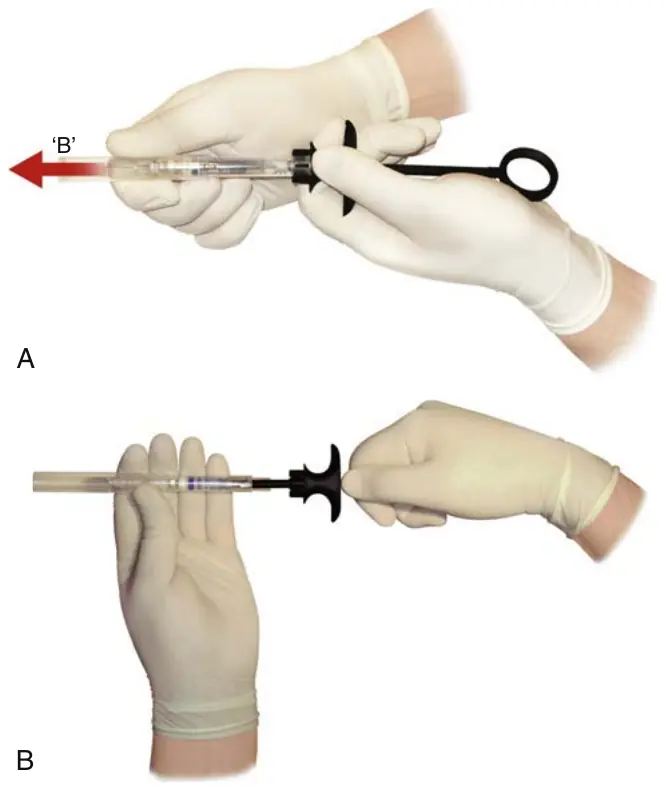
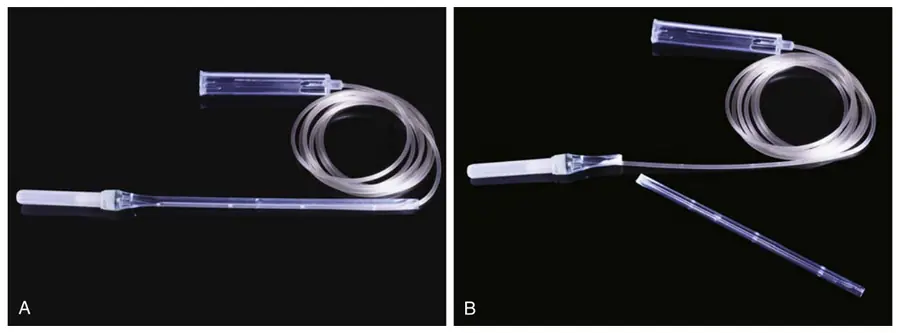

نسخه استخراجشده؛ ترجمه یا تأیید علمی انجام نشده است. وضعیت: captured
پس از بلاک PSA، سرنگ را بیدرپوش روی سینی گذاشتی. دستیار هنگام جمع کردن سینی، سوزن آلوده را در انگشتش فرو میکند. کدام سرنگ این خطر را از پایه کم میکرد؟

سرنگ ایمنی (safety syringe) برای کم کردن خطر فرورفتن سوزن آلوده در دست کادر درمان پس از تزریق ساخته شده است. غلافی دارد که پس از بیرون آمدن سوزن از بافت، روی سوزن جلو میآید و قفل میشود.
در آغاز جایگزینی سرنگ معمولی با سرنگ ایمنی، شمار فرورفتن سوزن در دست حتی بیشتر شد؛ آموزش عملی، پایش و یادآوری پیاپی آن را پایین آورد. توصیه این است که در همهی تزریقهای بیحسی از سرنگ ایمنی استفاده شود.
با سرنگ معمولی باید همزمان هم سوزن را هدایت کنی و هم سرعت ریختن دارو را؛ گرفتن سرنگ با کف دست و شست هم برای کنترل ظریف مناسب نیست. C-CLAD (از ۱۹۹۷ در دندانپزشکی) این دو کار را جدا میکند:

بیشترین سود در تزریقهای دردناک است: کام، نازوپالاتین، AMSA و P-ASA معمولاً با درد ۰ تا ۳ از ۱۰ انجام میشوند. وقتی دندانپزشکان خودشان تزریق کامی گرفتند، ۹۶٪ C-CLAD را ترجیح دادند و درد دو تا سه برابر کمتر بود.
نکتهی طلایی: در کودک، PDL با C-CLAD میتواند جایگزین IANB شود و چون لب بیحس نمیماند، خطر گاز گرفتن لب کم میشود. عیبش ابزار اضافه و نیاز به آموزش است.